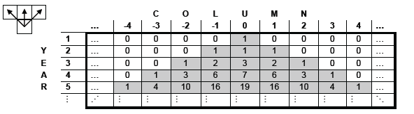
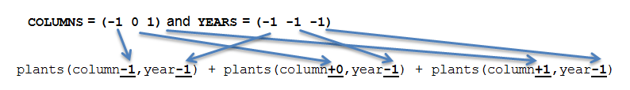

Strawberry plants are funny. Every year they send "runners" to their left and right neighbors, which take seed and become an entirely new strawberry plant the next year. We'd like to model this process and count how many strawberry plants we'll have in our garden (that we've divided into columns, like the number line) starting from a single strawberry plant in column 0 in year 1, the top row. All other numbers in the top row are 0 (no other strawberry plants). The number in every subsequent row is the sum of the three numbers directly above it, to the above left and to the above right as shown below. We've filled in the table for years 1 through 5:

Let's write a block (framework under the "Plants" sprite)
that takes in a column and year and reports
the number of plants that will be in that column in that year. We don't want to be too specific, however. It's possible
that a new scientific discovery will reveal that strawberry plants actually grow out in many directions, or only grow every
other year. Just to be safe, we've defined the lists COLUMNS and YEARS that tell us exactly
how each count depends on the other, previous counts. In the above example, COLUMNS would be defined as
(-1 0 1) and YEARS as (-1 -1 -1). This illustration should help clarify
why we have chosen these particular values of COLUMNS and YEARS.

However, these lists could be 1 item long, or 20 items long. Make sure to make your block general enough to
handle any of these possibilities. You'll definitely find HOFs helpful here.
Reminder: map can take in
multiple lists, as long as the reporter given takes in the same number of inputs as there are lists. For example,
will report the list ("california", "stanford", "francisco").